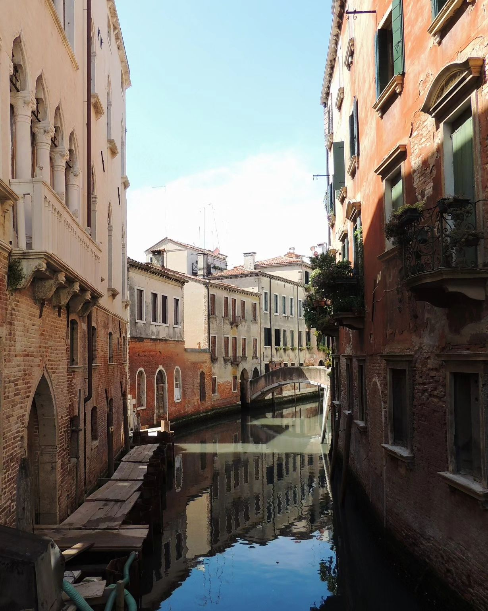
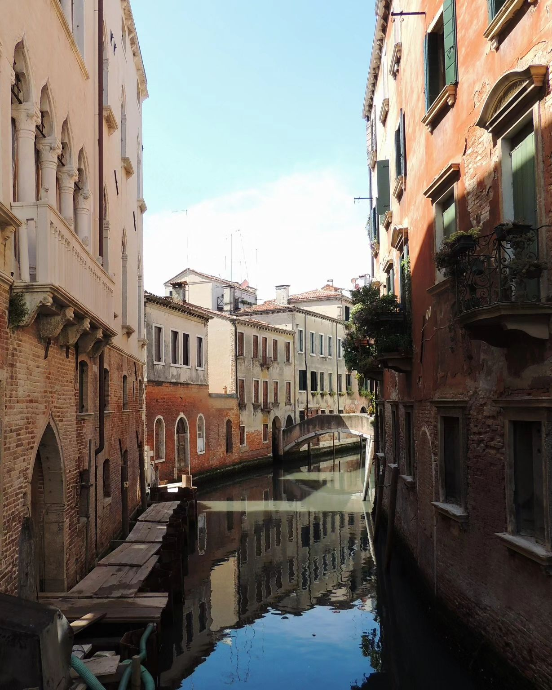

After moving more than 20 times in the past, I believe I've finally found a place where I can settle for a while. For the past two years, I've been living in a spacious apartment just a stone's throw from the University in Linköping. I share my home with two charming ringneck doves, Da Vinki and Boye. Beside my birds, I'm fortunate to have a fantastic, talkative roommate who, fun fact, is over 2 meters tall and tells captivating stories.
What are you doing?
This is a now page. If you have your own site, you should make one, too!
My life is often busy, and I've been somewhat secretive when sharing details with family and friends. I thought this would be a great way to keep everyone updated on what I'm currently doing. I'll do my best to keep this page updated with any new happenings. Thank you, Phillip Ridlen, for inspiring me with your now page!
This was what I was doing as of July 27 2024
This is what I am doing now
Life 🌟

Education 🎓
I am currently in my final year of a master's program in Computer Science and Software Engineering at Linköpings University, where I have specialized in Networks and Security. Additionally, I have taken courses related to operating systems and language construction, which are my primary interests. Recently, I enjoyed reading "The Dragon Book" in my free time for fun. Besides my studies at Linköping University, I have also pursued extra courses at various institutions, including Karlstad University, Uppsala University, Mid Sweden University, and the University of Borås. This has allowed me to broaden my perspectives and learn without focusing on exam requirements. I am considering pursuing a Ph.D. in the future, but that is still uncertain!
Work 💼
I am currently a summer intern testing engineer at Entiros Integrations AB. Alongside my colleague, I am working on creating end-to-end and frontend tests for Starlify. Once this project is complete, I will return to Opera Sweden AB to work on my master's thesis project — a gRPC API platform, similar to Postman.
Organizations 🏢
I've recently founded an ethical hacking organization called LiTHe Hax. The board and I are currently working on developing our visual identity and creating a membership portal. Once these are completed, we will begin recruiting members, competing in CTFs, and organizing workshops and lectures on hacking and cybersecurity. I've partnered with Cyberly, which has been an exciting collaboration! I also want to extend a heartfelt thank you to Assistant Professor Mikael Asplund for inspiring me to start this organization and for all the support we've received.
I was elected Editor-in-Chief of LiTHanian, the student magazine of the technical faculties. In this role, I will lead a team of approximately 15 graphic designers, writers, photographers, and logistics personnel, whom I am currently recruiting. Our goal is to publish four issues in the upcoming year. This experience is quite different from my previous organizational roles, and I am extremely excited about it!
Expert Progress 📈
The concept of reaching 10,000 hours to become a professional or an expert in a field is derived from Malcolm Gladwell's book "Outliers: The Story of Success" Gladwell popularized the idea that achieving a high level of proficiency in any field typically requires about 10,000 hours of dedicated practice. This notion is based on the research of psychologist Anders Ericsson, who studied the practice habits of elite performers in various domains.
I've been tracking my programming time since 2019, so these numbers are based on that data. The actual total is likely higher, considering I wrote my first program in 2012! Please note that I include this jokingly; I don't necessarily believe in the idea of becoming an expert after 10,000 hours. I haven't given it much thought, and I certainly don't feel like an expert yet.
Hobby Projects ⚙️
For me, having hobbies outside of studying and working is very important. Currently, my main hobbies are programming, photography, music, and writing. I tend to switch between projects frequently, so completed projects aren't very common. But that's the beauty of hobbies — you don't have to prove anything; you can engage in them purely for enjoyment. And when it stops being fun, it's time to move on!
When it comes to programming, I'm currently working on two active projects: my personal website (this page, basically) and TUGS, a script designed to make tasks involving Git and Trello less troublesome.
 

At the beginning of this summer, I took a solo Euro trip and captured many photos along the way. Here are a few of my favorites from the hundreds I took. The cat photo was taken in Amsterdam, Netherlands. The next image is from Venice, Italy, and the last one is from Berlin, Germany.
In music, I recently discovered the world of modular synthesizers. I'm in the process of collecting modules to build a setup for producing an EP of my own instrumental tracks.
I'm also a big fan of poetry. Here's a poem I wrote recently:
your diary, lost, by me was found
invites me in, to touch, to feel
to let me read
reveal the depths, the fears
for in your words, i find my peace
a silent ode to a heavy heart
a place of rest, from the world apart,
where whispers linger and tears are shed
in the cradle of your gentle hold,
in the middle of the night,
i seek your touch
"build us a coffin," you said, for the love we've lost
so let this grave, by my own hands made,
be not just a spot where I am laid
so I carve my path through the earthen bed
and here's to the girl with the angel's face
with the beautiful mind
when thoughts dance freely
feel the calm, the serene,
in places,
you've never been
let the world around you sleep
close your eyes, and drift away,
to where the night meets the day
to tender moments spent with me
a world unnoticed, yet fully alive